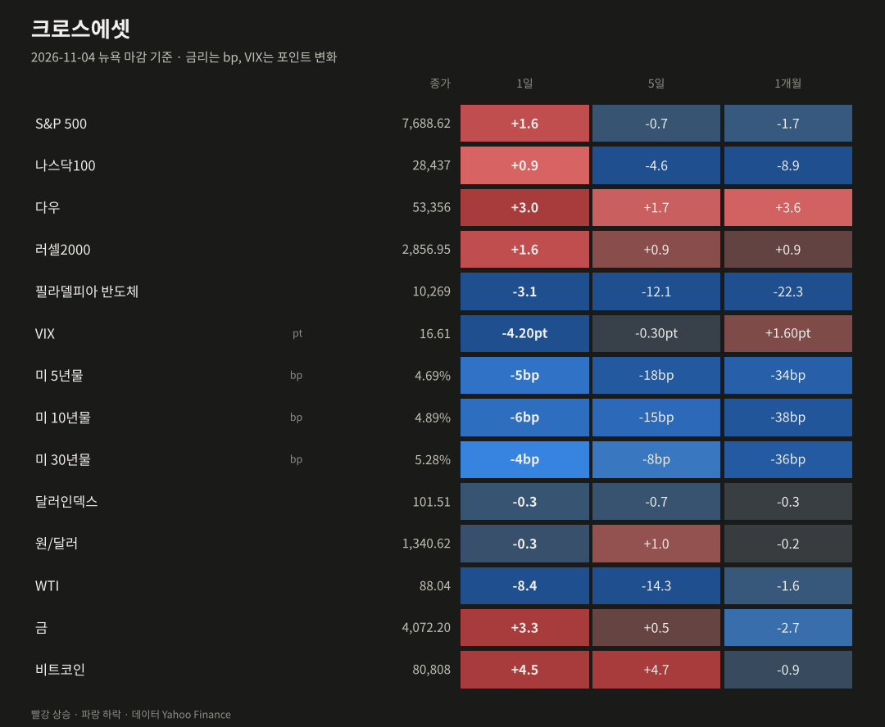
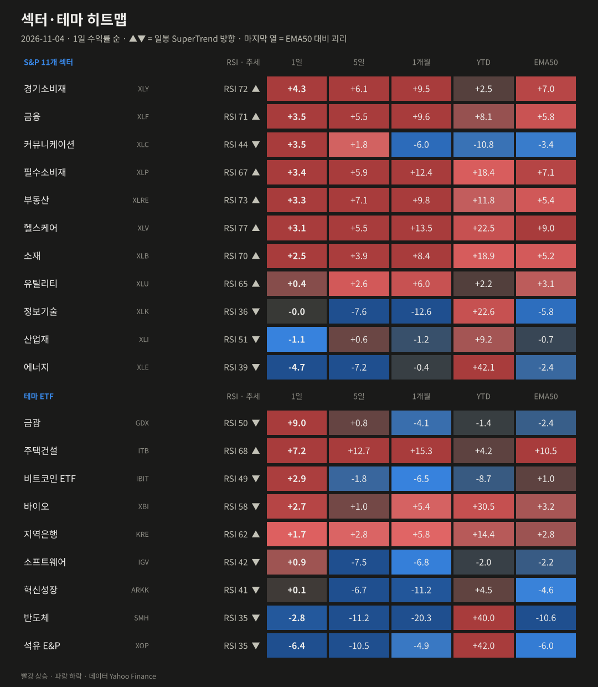
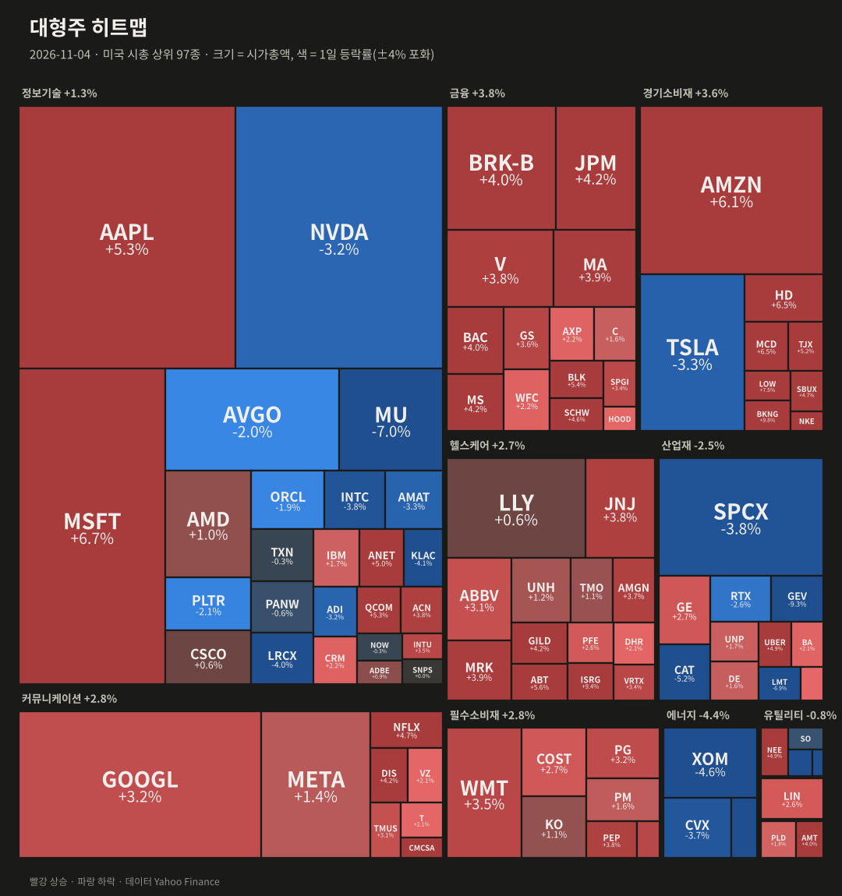
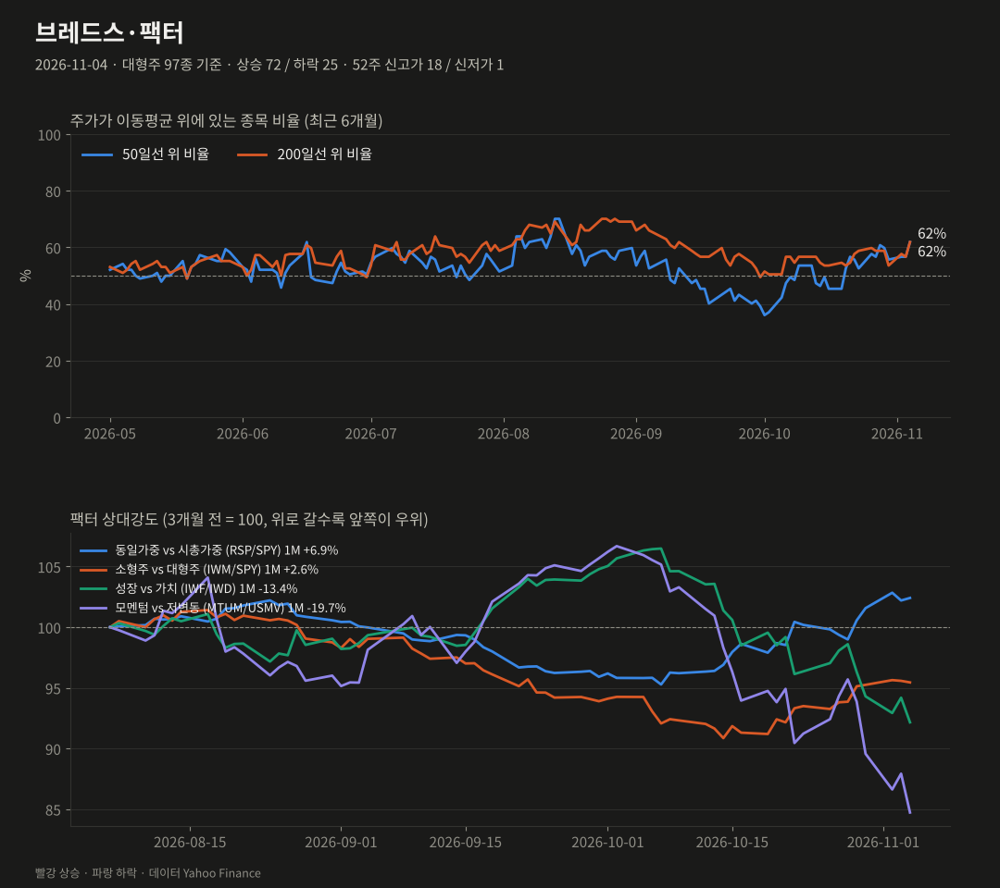
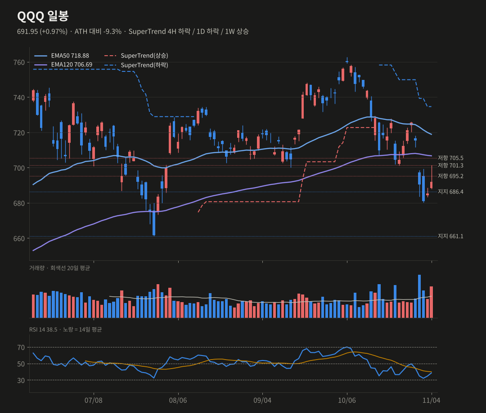
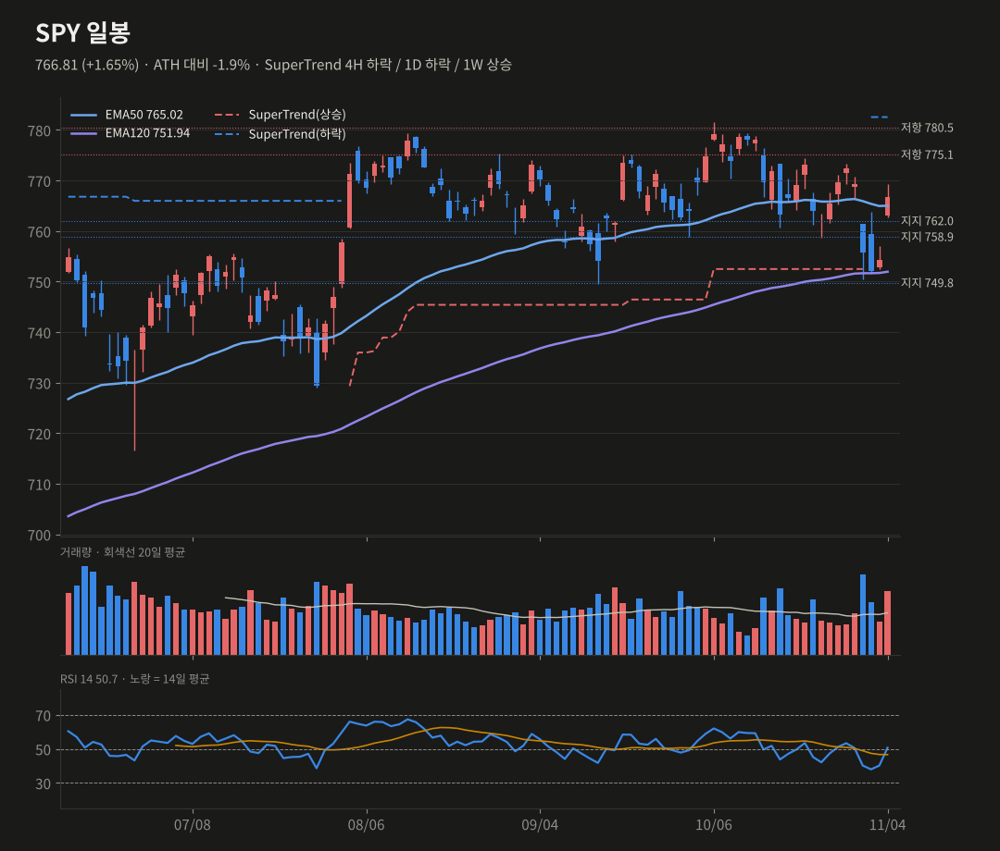
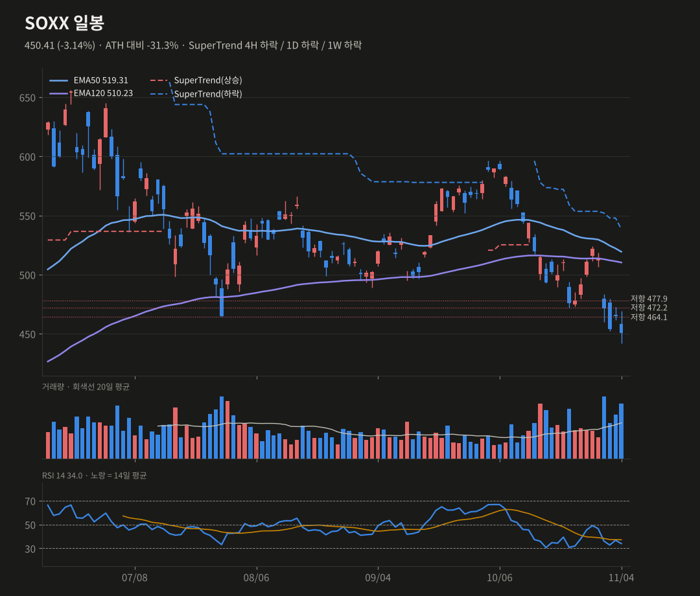
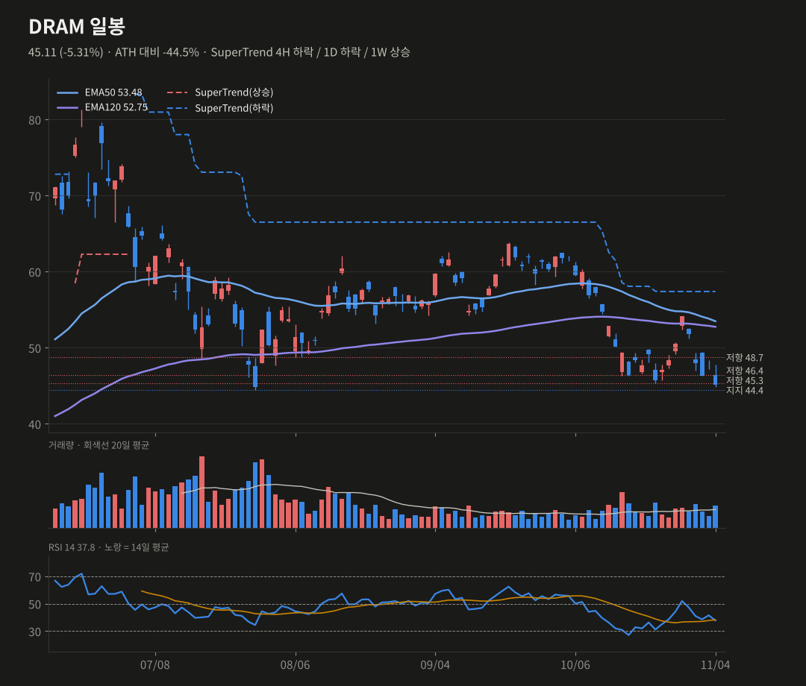

미증시 마감 브리핑
11/4(수) 뉴욕 마감 기준 · 생성 2026-11-05 07:41 KST
중간선거 다음 날 다우 +3.0%로 올해 최고의 하루였어요. 유가 −8.4%와 금리 하락이 끌어올렸고, 반도체(SOX −3.1%)와 AI 전력주만 빠졌어요.
S&P 5007,688.62+1.58%
나스닥10028,437+0.91%
다우53,356+3.03%
러셀20002,856.95+1.58%
반도체(SOX)10,269-3.13%
VIX16.61-4.20pt
미 10년물4.89%-5.80bp
원/달러1,340.62-0.31%
요약
- 선거 결과 분열 정부 전망에 다우 +3.0%, S&P +1.6%였어요. 오른 종목은 72/97로 폭넓은 랠리였어요.
- WTI −8.4%(88달러), 10년물 4.89%, VIX 16.6으로 매크로 부담이 크게 줄었어요.
- AI 인프라는 역행했어요. SOX −3.1%, MU −7%, VST −14%로 규제·투자 둔화 우려가 붙었어요.
- SPY는 EMA50을 회복했고 단기 60%예요. SOXX는 450, DRAM은 44.4가 지지선이에요.
종합 판단
선거 결과로 '유가 하락, 금리 하락, 정책 불확실성 축소'가 한꺼번에 반영되면서 경기민감·내수주 중심의 넓은 랠리가 나왔어요. 반면 AI 인프라(반도체·전력·메모리)는 투자 둔화와 규제 우려가 새로 붙어, 한 달간 이어진 '기술주 이탈' 로테이션이 오히려 강화됐어요. SPY는 단기 확률을 올렸지만, SOXX와 DRAM은 확률을 낮췄어요.
선거 결과로 '유가 하락, 금리 하락, 정책 불확실성 축소'가 한꺼번에 반영되면서 경기민감·내수주 중심의 넓은 랠리가 나왔어요. 반면 AI 인프라(반도체·전력·메모리)는 투자 둔화와 규제 우려가 새로 붙어, 한 달간 이어진 '기술주 이탈' 로테이션이 오히려 강화됐어요. SPY는 단기 확률을 올렸지만, SOXX와 DRAM은 확률을 낮췄어요.
무엇이 시장을 움직였나
- 선거 결과: AP 보도로는 민주당이 상·하원 다수당을 모두 확보할 전망이에요. 시장은 '분열 정부로 급격한 정책 변화와 추가 국채 발행 위험이 줄었다'고 해석했어요. 다우는 1,569pt 올랐는데, 중간선거 이후 44년 만에 가장 큰 상승이에요.
- 유가 급락: 의회 구도 변화로 이란 전쟁이 축소될 수 있다는 기대가 퍼졌어요. WTI가 −8.4% 내려 88.0달러로 두 달 만에 최저예요. 에너지가 −4.7%로 가장 약했어요.
- 금리·변동성: 10년물 4.89%(−5.8bp), VIX 16.6(−4.2pt)으로 떨어졌어요. 금은 +3.3%(4,072달러), 비트코인은 +4.5%(8.1만 달러)였어요.
- AI 인프라 약세: 민주당 의회가 데이터센터 확장을 늦추고 규제를 늘릴 수 있다는 우려가 나왔어요. VST −13.8%, GEV −9.3%, CEG −6.7%, MU −7.0%, NVDA −3.1%였어요. 반면 MSFT는 +6.7%(거래량 2.3배)로 대형 기술주 안에서도 갈렸어요.
- 강세 업종: 경기소비재(+4.3%), 금융(+3.5%), 주택건설(+7.3%), 금광(+9.0%)이 이끌었어요.
장 마감 후·시간외
- 시간외는 조용했어요. QQQ 694.0(+0.3%), SPY 768.2(+0.2%), SOXX 451.5(+0.2%), DRAM 45.5(+0.8%)예요.

| 자산 | 종가 | 1일 | 5일 | 1개월 |
|---|---|---|---|---|
| S&P 500 | 7688.62 | +1.58% | -0.71% | -1.67% |
| 나스닥100 | 28437.17 | +0.91% | -4.62% | -8.93% |
| 다우 | 53356.12 | +3.03% | +1.68% | +3.56% |
| 러셀2000 | 2856.95 | +1.58% | +0.93% | +0.94% |
| 필라델피아 반도체 | 10268.65 | -3.13% | -12.11% | -22.31% |
| VIX | 16.61 | -4.20pt | -0.30pt | +1.60pt |
| 미 5년물 | 4.689 | -5.4bp | -18.2bp | -33.9bp |
| 미 10년물 | 4.894 | -5.8bp | -15.1bp | -37.5bp |
| 미 30년물 | 5.282 | -4.2bp | -7.9bp | -35.9bp |
| 달러인덱스 | 101.51 | -0.35% | -0.66% | -0.31% |
| 원/달러 | 1340.62 | -0.31% | +1.04% | -0.23% |
| WTI | 88.04 | -8.38% | -14.34% | -1.57% |
| 금 | 4072.2 | +3.34% | +0.51% | -2.74% |
| 비트코인 | 80808.35 | +4.48% | +4.68% | -0.92% |

| 섹터·테마 | 1일 | 5일 | 1개월 | YTD | RSI | 일봉 추세 |
|---|---|---|---|---|---|---|
| 금광 GDX | +9.01% | +0.76% | -4.11% | -1.4% | 50 | 하락 |
| 주택건설 ITB | +7.25% | +12.71% | +15.35% | +4.2% | 68 | 상승 |
| 경기소비재 XLY | +4.26% | +6.07% | +9.50% | +2.5% | 72 | 상승 |
| 금융 XLF | +3.51% | +5.47% | +9.61% | +8.1% | 71 | 상승 |
| 커뮤니케이션 XLC | +3.47% | +1.76% | -5.99% | -10.8% | 44 | 하락 |
| 필수소비재 XLP | +3.36% | +5.87% | +12.40% | +18.4% | 67 | 상승 |
| 부동산 XLRE | +3.32% | +7.10% | +9.78% | +11.8% | 73 | 상승 |
| 헬스케어 XLV | +3.06% | +5.53% | +13.51% | +22.5% | 77 | 상승 |
| 비트코인 ETF IBIT | +2.91% | -1.76% | -6.52% | -8.7% | 49 | 하락 |
| 바이오 XBI | +2.67% | +1.01% | +5.43% | +30.5% | 58 | 하락 |
| 소재 XLB | +2.49% | +3.93% | +8.39% | +18.9% | 70 | 상승 |
| 지역은행 KRE | +1.72% | +2.80% | +5.79% | +14.4% | 62 | 상승 |
| 소프트웨어 IGV | +0.88% | -7.46% | -6.84% | -2.0% | 42 | 하락 |
| 유틸리티 XLU | +0.44% | +2.64% | +5.95% | +2.2% | 65 | 상승 |
| 혁신성장 ARKK | +0.06% | -6.68% | -11.18% | +4.5% | 41 | 하락 |
| 정보기술 XLK | -0.01% | -7.59% | -12.62% | +22.6% | 36 | 하락 |
| 산업재 XLI | -1.09% | +0.58% | -1.24% | +9.2% | 51 | 하락 |
| 반도체 SMH | -2.75% | -11.17% | -20.27% | +40.0% | 35 | 하락 |
| 에너지 XLE | -4.74% | -7.20% | -0.36% | +42.1% | 39 | 하락 |
| 석유 E&P XOP | -6.39% | -10.52% | -4.87% | +42.0% | 35 | 하락 |

| 상승 상위 | 1일 | 거래량(20일 대비) | 하락 상위 | 1일 | 거래량 |
|---|---|---|---|---|---|
| BKNG | +9.83% | x2.04 | VST | -13.83% | x3.16 |
| ISRG | +9.38% | x1.91 | GEV | -9.30% | x2.0 |
| LOW | +7.50% | x1.51 | MU | -7.00% | x1.32 |
| MSFT | +6.68% | x2.27 | LMT | -6.88% | x1.93 |
| MCD | +6.53% | x2.09 | CEG | -6.71% | x1.86 |
| HD | +6.53% | x1.72 | CAT | -5.23% | x1.71 |

대형주 97종: 상승 72 / 하락 25 · 50일선 위 61.9% (전일 56.7%, 5일 전 60.8%) · 200일선 위 61.9% · 52주 신고가 18 / 신저가 1
오른 종목 72, 내린 종목 25였고 52주 신고가가 18개 나왔어요. SMA50 위 종목 비율은 56.7%에서 61.9%로 올랐어요. 동일가중(RSP +1.86%)도 시총가중을 앞서 폭넓은 랠리였어요.
| 팩터 스프레드 | 1일 | 5일 | 1개월 |
|---|---|---|---|
| 동일가중 vs 시총가중 (RSP/SPY) | +0.20% | +3.45% | +6.87% |
| 소형주 vs 대형주 (IWM/SPY) | -0.14% | +1.69% | +2.57% |
| 성장 vs 가치 (IWF/IWD) | -2.15% | -6.53% | -13.40% |
| 모멘텀 vs 저변동 (MTUM/USMV) | -3.64% | -11.46% | -19.71% |
기술적 분석 · 확률
TradingView 설정과 맞춘 지표(EMA50·EMA120, SuperTrend ATR20×4, RSI14, MACD 12/26/9). 확률은 차트 기반 추정치예요.
QQQ 691.95 +0.97%
SuperTrend 4H 하락 / 1D 하락 / 1W 상승 · RSI 38.52
단기 반등 55% (+5) · 스윙 상승 35%
686.4 지지를 지키고 일봉 히스토그램이 상승 전환했어요(−4.55 → −3.98). 다만 반도체·AI 약세로 지수보다 약했고, 일봉 EMA120(706.7)과 SuperTrend(734.6) 아래라 스윙은 그대로예요.
상방 695.3 돌파 → 701.3, 706.7(EMA120)
하방 686.4 이탈 → 661.1
SuperTrend 4H 하락 / 1D 하락 / 1W 상승 · RSI 38.52
단기 반등 55% (+5) · 스윙 상승 35%
686.4 지지를 지키고 일봉 히스토그램이 상승 전환했어요(−4.55 → −3.98). 다만 반도체·AI 약세로 지수보다 약했고, 일봉 EMA120(706.7)과 SuperTrend(734.6) 아래라 스윙은 그대로예요.
상방 695.3 돌파 → 701.3, 706.7(EMA120)
하방 686.4 이탈 → 661.1
SPY 766.81 +1.65%
SuperTrend 4H 하락 / 1D 하락 / 1W 상승 · RSI 50.7
단기 상승 60% (+10) · 스윙 상승 45% (+5)
하루 만에 일봉 EMA50(765.0)을 되찾았어요. 일봉 RSI가 50 위로 올라왔고 4H MACD도 골든크로스예요. 넓은 브레드스가 뒷받침하고 있어요. 일봉 SuperTrend는 아직 하락(782.5)이고, ATH까지 −1.9%예요.
상방 775.2 돌파 → 780.5~781.6(ATH)
하방 762.0 이탈 → 758.9, 749.8
SuperTrend 4H 하락 / 1D 하락 / 1W 상승 · RSI 50.7
단기 상승 60% (+10) · 스윙 상승 45% (+5)
하루 만에 일봉 EMA50(765.0)을 되찾았어요. 일봉 RSI가 50 위로 올라왔고 4H MACD도 골든크로스예요. 넓은 브레드스가 뒷받침하고 있어요. 일봉 SuperTrend는 아직 하락(782.5)이고, ATH까지 −1.9%예요.
상방 775.2 돌파 → 780.5~781.6(ATH)
하방 762.0 이탈 → 758.9, 749.8
SOXX 450.41 -3.14%
SuperTrend 4H 하락 / 1D 하락 / 1W 하락 · RSI 33.97
단기 반등 40% (-10) · 스윙 상승 30% (-5)
AMD 호실적에도 −3.1%로 주봉 EMA50(456.7) 아래로 다시 밀렸어요. 'AI 투자 둔화' 정치 리스크가 새로 생겼어요. RSI 34로 과매도 근처지만, 일봉·주봉 SuperTrend가 모두 하락이에요.
상방 456.7 회복 → 464.1, 472.2
하방 450 이탈 → 하단 지지 공백(ATH −31%)
SuperTrend 4H 하락 / 1D 하락 / 1W 하락 · RSI 33.97
단기 반등 40% (-10) · 스윙 상승 30% (-5)
AMD 호실적에도 −3.1%로 주봉 EMA50(456.7) 아래로 다시 밀렸어요. 'AI 투자 둔화' 정치 리스크가 새로 생겼어요. RSI 34로 과매도 근처지만, 일봉·주봉 SuperTrend가 모두 하락이에요.
상방 456.7 회복 → 464.1, 472.2
하방 450 이탈 → 하단 지지 공백(ATH −31%)
DRAM 45.11 -5.31%
SuperTrend 4H 하락 / 1D 하락 / 1W 상승 · RSI 37.76
단기 반등 40% (-5) · 스윙 상승 30% (-5)
MU −7.0%와 함께 −5.3%였어요. 일봉 MACD가 데드크로스로 돌아섰고 주봉 EMA50(46.8)도 다시 아래예요. 마지막 지지 44.4 바로 위에 있어요. 주봉 이력이 짧아 일봉 위주로 판단해요.
상방 46.4 회복 → 48.7
하방 44.4 이탈 → 상장 후 저점권
SuperTrend 4H 하락 / 1D 하락 / 1W 상승 · RSI 37.76
단기 반등 40% (-5) · 스윙 상승 30% (-5)
MU −7.0%와 함께 −5.3%였어요. 일봉 MACD가 데드크로스로 돌아섰고 주봉 EMA50(46.8)도 다시 아래예요. 마지막 지지 44.4 바로 위에 있어요. 주봉 이력이 짧아 일봉 위주로 판단해요.
상방 46.4 회복 → 48.7
하방 44.4 이탈 → 상장 후 저점권




일정
- 상·하원 최종 확정(AP) 진행
- 이란 협상과 유가 추이
- 12월 FOMC 인상 여부
출처
- Stocks surge, and the Dow soars 1,500 points as oil prices tumble following the US midterm elections (AP via Boston.com)
- Stock Market Today, Nov. 4: Dow Surges 3% in Biggest Post-Midterm Rally in 44 Years (Motley Fool)
데이터 Yahoo Finance·Nasdaq. 색은 한국식(빨강 상승·파랑 하락). 투자 판단의 참고 자료예요. 지난 브리핑